Local insight
Born-and-raised guides who open doors to real Kyrgyz culture.


Curated journeys across Kyrgyzstan — culture, mountains, and authentic local experiences.
Kyrgyzstan is a land of breathtaking mountains, crystal-clear lakes, and timeless nomadic traditions. From high-altitude adventures to quiet moments in nature, this is a journey that stays with you long after you return home.
Our Story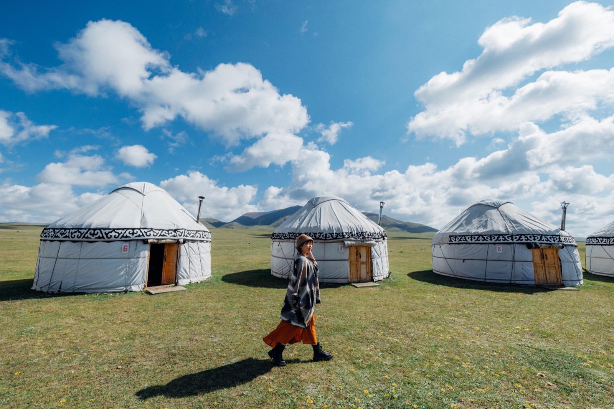


Curated journeys across Kyrgyzstan — culture, mountains, and authentic local experiences.

9 days in Bek's home mountains
This isn't a sightseeing tour. You travel to the village near Toktogul where Bek grew up, live with his family and relatives, and ride with them into the mountains, all the way up to the nomads' summer camps.
強度★★★★★
Pick a season to see what it feels like in the mountains, valleys, and lakes.

March – May
The countryside comes alive with wildflowers, poppy fields, and fresh greenery, perfect for low-elevation hikes and enjoying nature's awakening.

June – August
It's the perfect season for outdoor adventures: trek open mountain trails, visit sunlit alpine lakes like Issyk-Kul, and stay in yurt camps for a nomadic experience.

September – November
Golden and crimson landscapes, cooler weather, and stunning valleys make it ideal for exploring and photography.

December – February
A snowy wonderland awaits with skiing, snowboarding, hot springs, and peaceful mountain serenity.

A boy who left the mountains, a girl who roamed the world, and a
land waiting to be seen.
Kyrgyzstan didn’t hand us answers,
but it gave us a direction—to turn inward, toward the heart,
toward what’s real.
Based on real reviews from Google
Small groups, expert local guides, and experiences you won’t find on a generic itinerary.
Born-and-raised guides who open doors to real Kyrgyz culture.
From visas to dietary needs, we handle the details before you land.
Fewer stops, more time to breathe in mountains, lakes, and yurt life.
Well-vetted partners, modern vehicles, and backup plans for weather days.
Practical routes, seasonal tips, and budgets to help you plan Kyrgyzstan your way.
People and places from the Tien Shan to the lakes—real slices of our daily life.
Travelers, writers, and friends share their favorite moments and cultural insights.
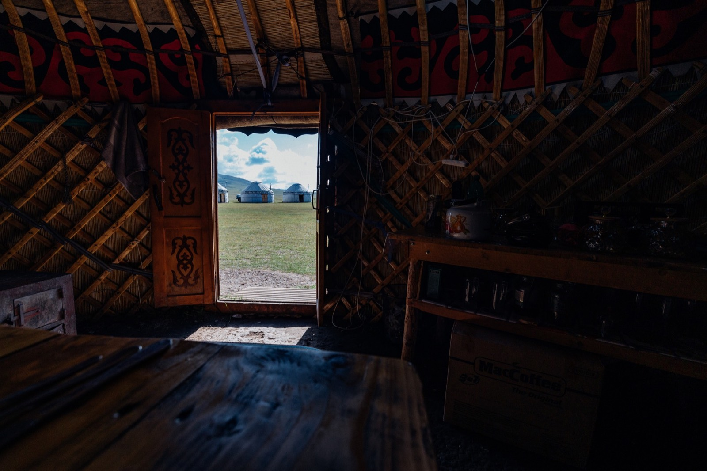
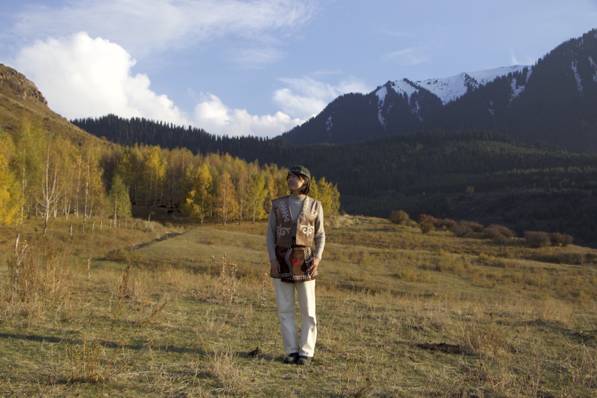

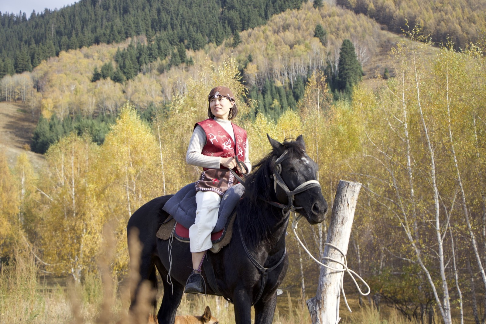
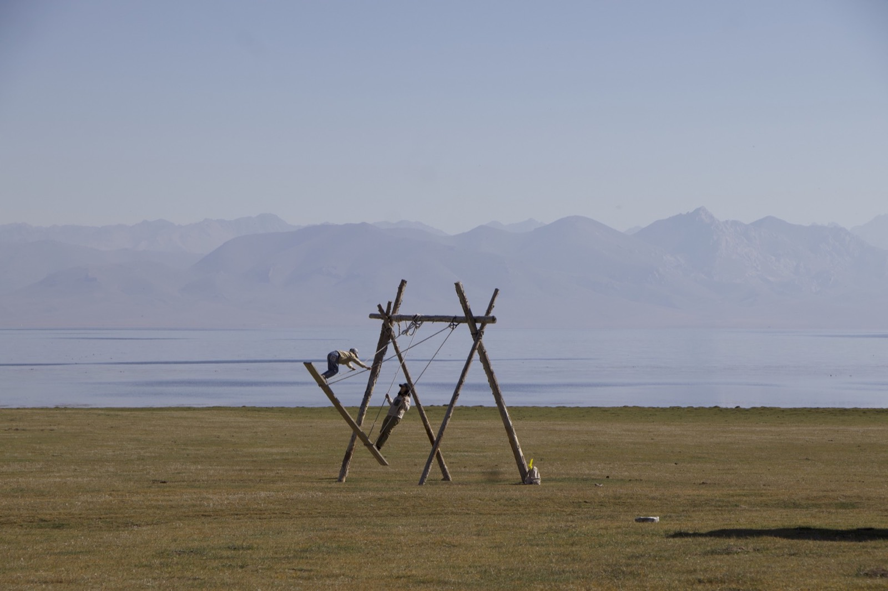
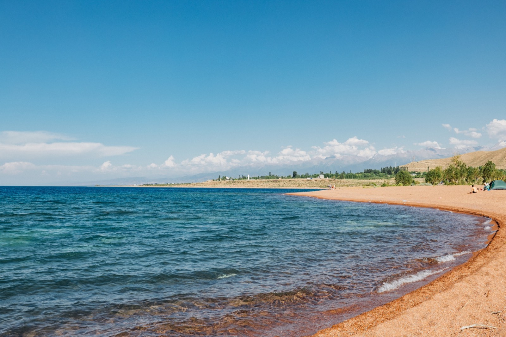
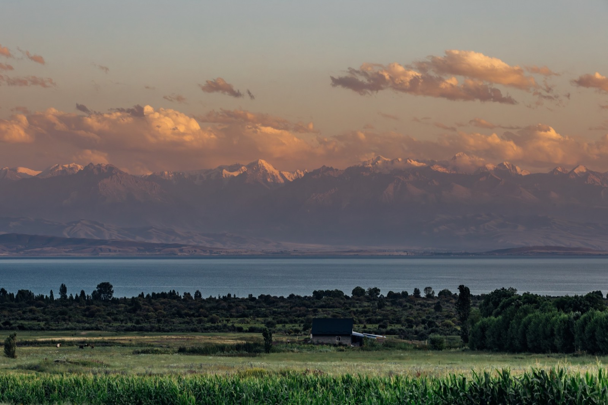
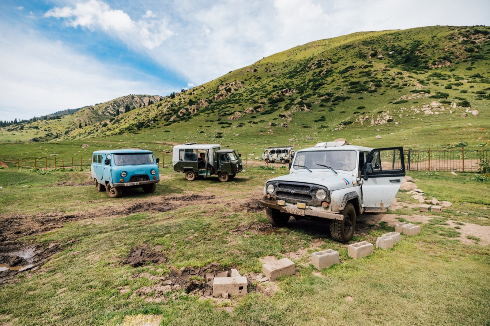
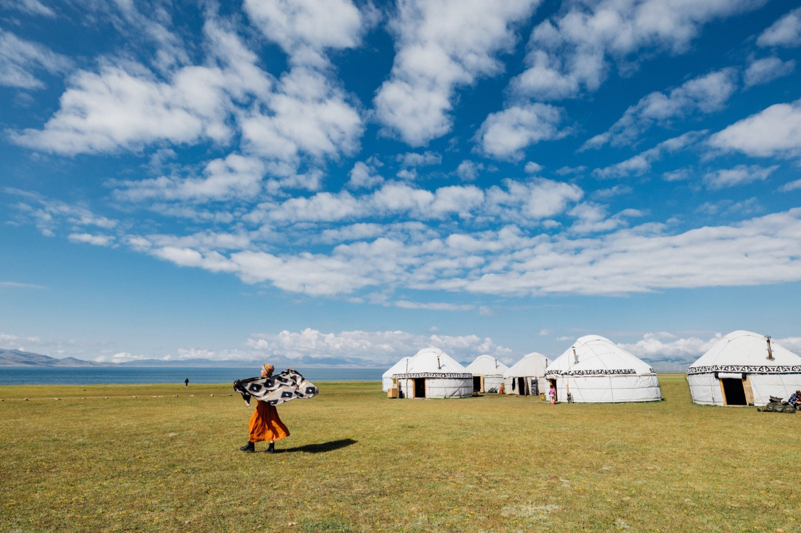

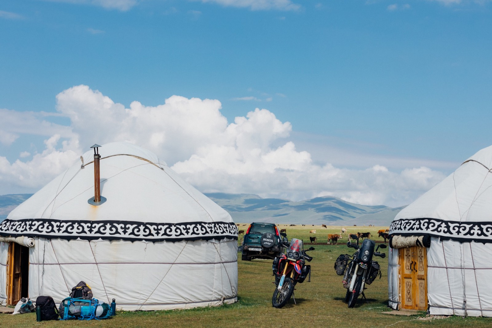
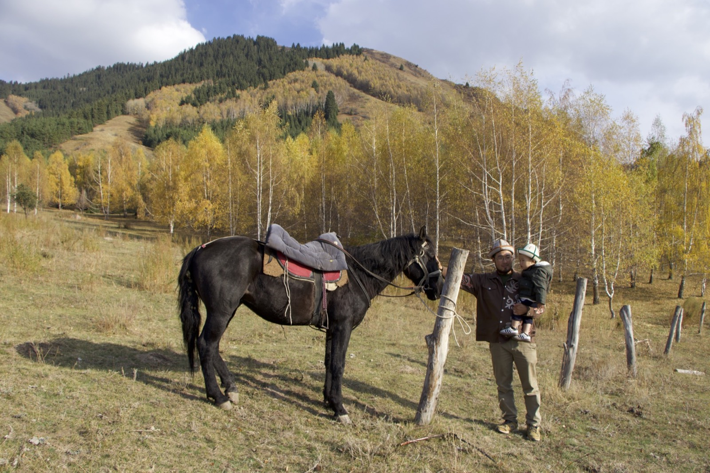
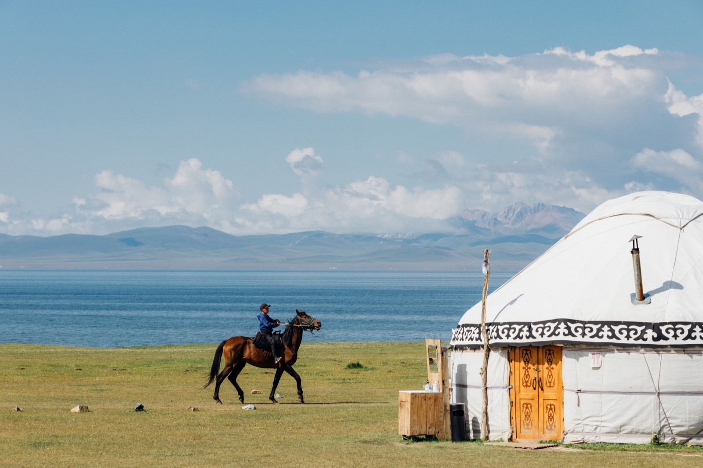
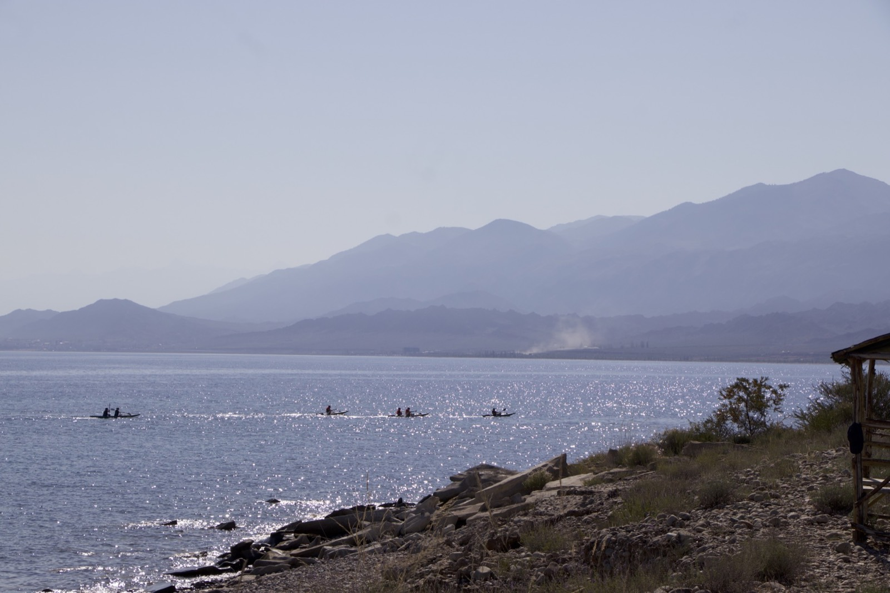


Besides our tours, we run our own YouTube channel, Bek & Ruby, where we film real life in Kyrgyzstan: our family, nomad traditions, food and the journeys we share with our guests.
Pick a video and jump to YouTube to dive deeper into our journeys.
Watch our latest trip clips, behind-the-scenes, and daily life here.
Tell us your time, interests, and budget—we’ll tailor the route, stays, and local experiences.
Start my trip plan